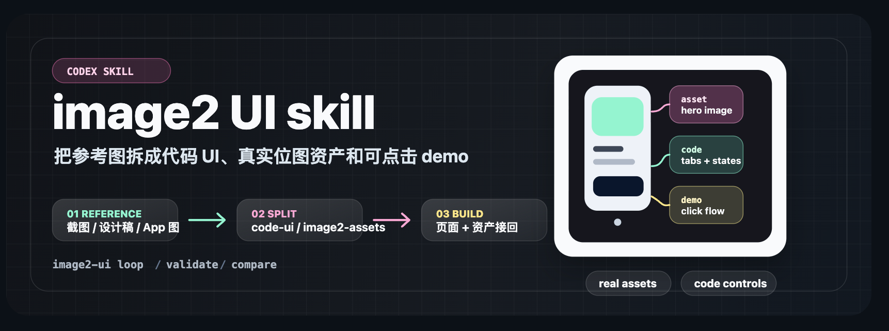
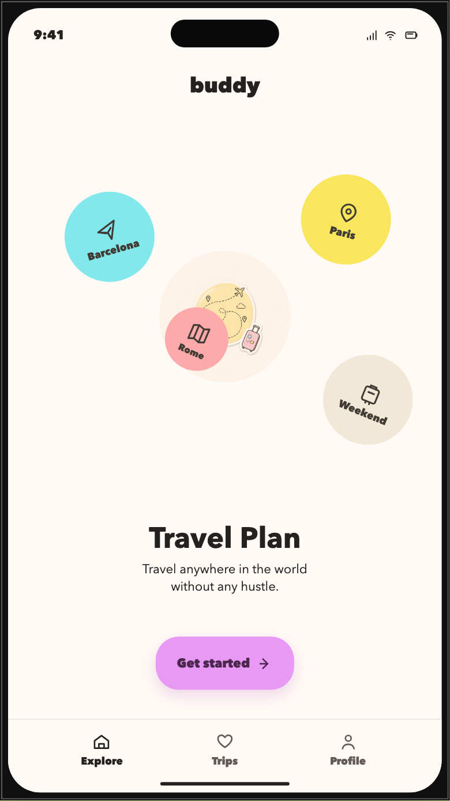

HTML
决定页面“有什么”。标题、段落、图片、按钮，都先用 HTML 写出来。
<button>开始学习</button>
关键词：内容、结构、语义

A SIMPLE PATH
先说清用户来到这个页面，要完成什么任务。
把页面分成内容、布局、图片、按钮和状态。
再判断哪些用 HTML、CSS，哪些需要 JavaScript。
CASE STUDY / START WITH A REAL SCREEN
下面的案例都来自案例库。点击切换，你会看到同一套分析方法如何适用于旅行、食谱和音乐产品。

案例库 · Buddy / 轻盈旅行计划顶部品牌名，中间主视觉和目的地标签，底部是三项主导航。
你可以先问自己：如果删掉图片，这个页面的任务还说得清吗？
THE FRONTEND TRIO
理解案例后，再看 HTML、CSS、JavaScript 就不抽象了：它们分别负责内容、外观和回应。
决定页面“有什么”。标题、段落、图片、按钮，都先用 HTML 写出来。
<button>开始学习</button>
关键词：内容、结构、语义
决定页面“长什么样”。颜色、字体、间距、布局和响应式都属于 CSS。
button { color: white; }
关键词：外观、布局、适配
决定页面“怎么回应”。点击、切换、校验和动态内容都可以交给 JavaScript。
button.addEventListener(...)
关键词：交互、状态、反馈
WHAT BEGINNERS ASK MOST
这些问题反复出现在前端学习社区里。答案不用背，先知道该往哪里走。
就是你在网页里能看到、能点击的这一层。比如 Buddy 的标题、图片、目的地按钮和点击后的变化。
不用。先用 HTML 放内容，再用 CSS 排好看；页面需要点击和切换时，才加入一点 JavaScript。
不是。UI 是你看见和点击的东西；UX 是你完成一件事顺不顺。按钮属于 UI，能不能轻松订好行程属于 UX。
选一个小页面，先照着做出标题、图片和一个按钮。不要等课程全部看完，做的过程中再查不会的地方。
UI WORDS YOU WILL SEE
这是一张完整的 Buddy 页面。点击图上的名称，看看这个部分叫什么、负责什么。
图上的绿色标注都可以点击
页头在页面最上方。这里放品牌名，让用户一眼知道自己正在使用哪个产品。
TRY ONE SMALL CHANGE
Buddy 的荧光黄负责制造出发感。选择颜色，看看同一个内容换了视觉语言后会发生什么。
.learning-card {
background: #b8f36b;
padding: 24px;
border-radius: 14px;
}你刚刚完成了一次 CSS 修改。
点击左侧颜色试试